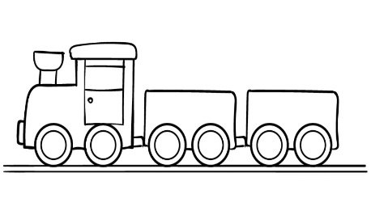
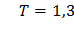
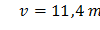
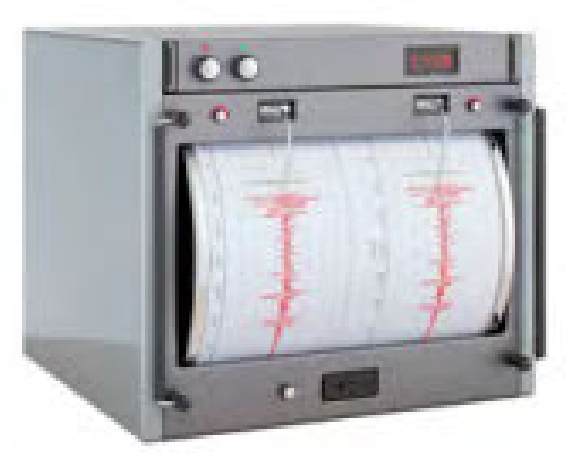

Bài 6 · Dao động tắt dần, cưỡng bức, cộng hưởng · 6 câu
PHẦN II. Câu trắc nghiệm đúng sai
Trong mỗi ý a), b), c), d) chọn Đúng hoặc Sai. Đúng 1 ý: 0,1 · 2 ý: 0,25 · 3 ý: 0,5 · 4 ý: 1,0 điểm.
1
Vận dụng
Một con lắc đơn dài 30 cm được treo vào trần của một toa xe lửa. Con lắc bị kích động mỗi khi bánh của toa xe gặp chỗ nối nhau của đường ray. Cho biết chiều dài của mỗi đường ray là 12,5 m, xe lửa chuyển động thẳng đều. Lấy $g = 9{,}8$ m/s$^2$.

a) Con lắc dao động với biên độ lớn nhất khi xảy ra hiện tượng cộng hưởng, tức là chu kì của xe lửa bằng chu kì dao động của con lắc.
b) Chu kì dao động riêng của con lắc: T = 1,4 s.

c) Để con lắc dao động với biên độ lớn nhất thì chu kì của xe lửa chính là thời gian để xe lửa đi hết một thanh ray: t = T = 1,099 s.
d) Con lắc dao động với biên độ lớn nhất khi vận tốc của xe là: v = 11,876 m/s.

2
Vận dụng
Máy đo địa chấn được sử dụng để phát hiện và đo đạc những rung động địa chấn được tạo ra bởi sự dịch chuyển của lớp vỏ Trái Đất. Tần số của những cơn địa chấn thường nằm trong khoảng 30 Hz – 40 Hz. Năng lượng từ các cơn địa chấn có khả năng kích thích con lắc lò xo bên trong máy đo làm đầu bút di chuyển để vẽ lên giấy như hình vẽ.

Hình 2.12
a) Dao động của con lắc lò xo trong máy địa chấn là dao động duy trì.
b) Đầu bút di chuyển và vẽ được lên tờ giấy là do các cơn địa chấn tạo ra dao động duy trì.
c) Tần số dao động của những con lắc lò xo trong máy địa chấn vào khoảng 30 Hz – 40 Hz.
d) Để máy địa chấn ghi nhận được kết quả tốt nhất thì tần số riêng của con lắc lò xo phải có giá trị thật nhỏ so với con số 30 Hz – 40 Hz.
3
Vận dụng
Một hành khách dùng một sợi dây không giãn có chiều dài $\ell$ để treo một ba lô lên trần một toa tàu hỏa. Biết rằng mỗi thanh ray của đường tàu có độ dài 12 m và mỗi khi tàu chạy qua chỗ nối hai thanh ray thì ba lô bị dao động cưỡng bức. Khi tàu chạy với tốc độ 36 km/h thì thấy chiếc ba lô dao động mạnh nhất.
a) Dao động của chiếc ba lô là mạnh nhất khi xảy ra cộng hưởng cơ học.
b) Chu kì ngoại lực là 2 s.
c) Chu kì dao động riêng của ba lô được tính theo công thức $T_{0}=2\pi\sqrt{\frac{\ell}{g}}$.
d) Chiều dài dây treo xấp xỉ 36 cm.
4
Vận dụng
Con lắc lò xo có độ cứng 64 N/m một đầu cố định, đầu còn lại gắn vật có khối lượng $m$ dao động điều hòa theo phương nằm ngang. Người ta tác dụng lên con lắc một ngoại lực tuần hoàn $F=F_{0}\cos\left(2\pi f t-\frac{\pi}{3}\right)$ (N). Thay đổi tần số ngoại lực từ 1,5 Hz đến 5 Hz thì nhận thấy tại giá trị tần số $f=2,55$ Hz vật dao động với biên độ cực đại.
a) Tần số dao động riêng của con lắc lò xo là 2,55 Hz.
b) Khối lượng vật nặng là 200 gam.
c) Khi thay đổi tần số, biên độ dao động lúc đầu tăng lên sau đó giảm đi.
d) Khi dao động cưỡng bức ổn định. Nếu thay đổi pha ban đầu của lực cưỡng bức thì biên độ dao động không thay đổi.
5
Vận dụng
Con lắc lò xo gồm vật nhỏ khối lượng 20 gam gắn vào đầu một lò xo có độ cứng 1 N/m. Vật được gắn trên một giá đỡ cố định nằm dọc theo trục lò xo. Hệ dao động theo phương nằm ngang. Biết hệ số ma sát giữa vật và giá đỡ là 0,1. Kéo vật khỏi vị trí cân bằng một khoảng 10 cm theo chiều dương rồi thả cho vật dao động không vận tốc đầu. Lấy $g = 10$ m/s$^2$.
a) Vị trí cân bằng tạm thời trong $\frac{1}{2}$ chu kỳ dao động đầu cách vị trí cân bằng một khoảng 1 cm.
b) Biên độ sau $\frac{1}{4}$ chu kỳ dao động đầu tiên là 10 cm.
c) Độ giảm biên độ dao động trong mỗi chu kì dao động là 8 cm.
d) Tốc độ lớn nhất mà vật đạt được trong quá trình dao động là $40\sqrt{2}$ (cm/s).
6
Vận dụng
Một con lắc lò xo gồm một lò xo có độ cứng 100 N/m, vật nặng khối lượng 250 gam. Kéo vật khỏi vị trí cân bằng một khoảng 4 cm theo chiều dương rồi thả cho vật dao động theo phương nằm ngang. Biết rằng sau mỗi chu kỳ dao động biên độ giảm 4%.
a) Chu kì dao động của vật $10\pi$ s.
b) Cơ năng ban đầu của vật 0,8 J.
c) Cơ năng của vật sau 2 chu kì dao động 0,074 J.
d) Sau 6 lần dao động cơ năng của vật còn lại 0,049 J.